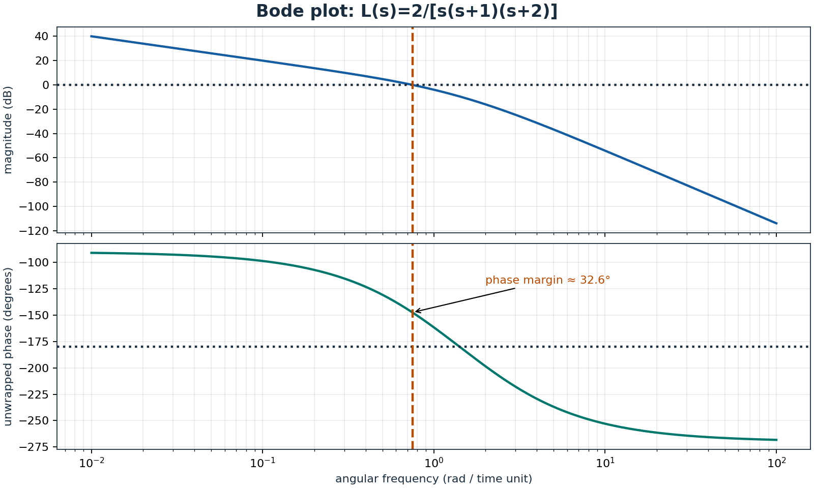
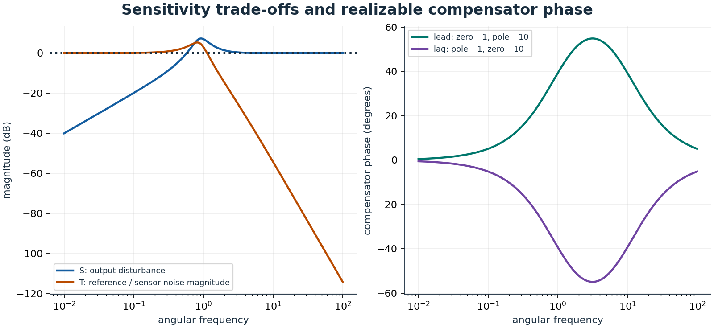

1 Completed SYDE 352: feedback analysis and controller design – study additions
AI-assisted editorial study additions: original explanations and illustrations, not verbatim historical writing nor a transcript. SYDE 352 is explicitly recorded as completed, as confirmed by the notebook owner; these are newly written review notes, not claimed surviving lecture notes or an official academic record.
The Waterloo 2022/23 SYDE calendar confirms that SYDE 352 covers classical and state-space models, stability, controllability, observability, sensitivity, Routh–Hurwitz, root locus, Bode, Nyquist, pole placement, PID, lead, and lag compensation. It supplies subject scope rather than proof of an individual’s attendance. No separate completion claim is made for SYDE 352L or other listed courses. Observer design and implementation cautions below are editorial elaborations. Calendar entries include courses introduced after 2019, so this later calendar must not be treated as a historical transcript.
1.1 Model, close the loop, identify the signals
For a finite-dimensional continuous-time LTI model,
The transfer matrix describes zero-initial-state response. State coordinates are not unique: a nonsingular change of basis preserves input–output behaviour and eigenvalues. Physical state selection, operating-point linearization, units, actuator limits, and sample timing must still be documented. A model fitted only around one operating point is not automatically valid across a device’s range.
For SISO negative unity feedback, \(e=r-y\), \(u=C(s)e\), and loop transfer \(L=CG\). Closing the loop gives \(T=L/(1+L)\). An output disturbance enters differently from a plant-input disturbance; placing it at the wrong summing junction produces the wrong transfer function. Algebraic closure also requires a well-posed interconnection, especially with direct feedthrough.

1.2 Internal stability is stronger than a tidy transfer function
Asymptotic internal stability requires all continuous-time closed-loop state eigenvalues strictly in the left half-plane. BIBO stability concerns bounded inputs producing bounded outputs; for a proper rational minimal transfer function, all poles must lie strictly left. A nonminimal realization can hide an unstable uncontrollable or unobservable mode through cancellation. For \(A=\operatorname{diag}(-1,0.5)\), \(B=(1,0)^T\), \(C=(1,0)\), the transfer function is \(1/(s+1)\), yet an initial second-state perturbation grows. Never cancel an unstable factor and declare the physical system internally stable.

1.3 Routh–Hurwitz and root locus: a worked cubic
Consider \(G(s)=1/[s(s+1)(s+2)]\) with proportional controller \(K\). Negative feedback yields characteristic polynomial \(p(s)=s^3+3s^2+2s+K\). Its Routh table is
Strict positivity of the first column gives the stable interval \(0<K<6\). At \(K=0\), a pole remains at the origin. At \(K=6\), \(p(s)=(s+3)(s^2+2)\), so the imaginary pair prevents asymptotic stability. For \(K>6\), two sign changes indicate two right-half-plane poles. Zero rows and zero leading entries require the special Routh construction rather than division by zero; the explicit factorization handles this boundary.
The root locus consists of solutions to \(1+KG(s)=0\) for nonnegative real \(K\). Its angle condition is an odd multiple of \(\pi\), and the magnitude condition sets \(K\). Branches begin at open-loop poles and end at zeros, including zeros at infinity. Here there are three asymptotes with centroid \(-1\) and angles \(60\), \(180\), and \(300\) degrees. On the real axis, the locus occupies \((-\infty,-2)\) and \((-1,0)\). The admissible breakaway point is \(-1+1/\sqrt3\); the other stationary candidate lies outside the positive-gain locus. More gain eventually destabilizes this system.

1.4 Frequency response and an explicit Nyquist convention
Bode magnitude is \(20\log_{10}|L(j\omega)|\) and phase must be unwrapped consistently. At a unity-gain crossing, phase margin is the distance to \(-180\) degrees under the usual negative-feedback convention. Gain margin measures gain change to instability at a phase crossing; multiple crossings, open-loop instability, delay, and nonminimum-phase behaviour require full-loop analysis rather than trusting one margin. A delay contributes phase \(-\omega\tau\) without reducing magnitude, making it particularly dangerous near crossover.

For Nyquist, traverse the boundary of the right half-plane clockwise: the imaginary axis runs from \(-j\infty\) to \(+j\infty\), followed by the closing semicircle. Let \(P\) count open-loop right-half-plane poles, \(Z\) count closed-loop right-half-plane poles, and \(N\) be net clockwise encirclements of \(-1\) by the complete mapped contour. Then
Thus stability needs \(N=-P\), not always zero encirclements. Imaginary-axis poles require contour indentation and explicit limiting treatment. To avoid concealing that issue, the Nyquist illustration uses a different loop, \(K/(s+1)^3\), with no axis poles. Its threshold is \(K=8\): for \(K=10\), two clockwise encirclements correctly predict two unstable closed-loop poles. Positive frequencies alone are not the full contour.

1.5 Controllability, observability, and pole placement
For \(n\) states, form \(\mathcal C=[B\ AB\ \cdots\ A^{n-1}B]\) and \(\mathcal O=[C^T\ (CA)^T\ \cdots\ (CA^{n-1})^T]^T\). Full rank \(n\) means controllability and observability respectively. Numerical rank needs a scale-aware tolerance; an almost uncontrollable direction may demand impractical input. Stabilizability and detectability are weaker conditions sufficient for many stabilization tasks when inaccessible modes are already stable.
Take \(A=\left(\begin{smallmatrix}0&1\\-2&-3\end{smallmatrix}\right)\), \(B=(0,1)^T\), \(C=(1,0)\). Then \(\mathcal C=\left(\begin{smallmatrix}0&1\\1&-3\end{smallmatrix}\right)\) and \(\mathcal O=I\), both full rank. Feedback \(u=-K_xx\) with \(K_x=(18,6)\) makes \(A-BK_x\) have characteristic polynomial \(s^2+9s+20\), placing poles at \(-4,-5\). Pole placement regulates the state; accurate reference tracking may additionally require a prefilter or integral action.
An observer \(\dot{\hat x}=A\hat x+Bu+L_o(y-C\hat x)\) gives error dynamics \(\dot e=(A-L_oC)e\). Here \(L_o=(10,10)^T\) places observer poles at \(-6,-7\). With estimated-state feedback, the ideal linear separation principle gives the union of controller and observer poles. Excessively fast observers amplify noise and model error; nonlinear saturation and discretization can invalidate the ideal conclusion.
1.6 Sensitivity and practical compensation
Define \(S=1/(1+L)\) and \(T=L/(1+L)\), so \(S+T=1\). Low-frequency large loop gain suppresses output disturbances through \(S\) but passes reference and measurement noise through \(T\) in magnitude; sensor noise enters output with sign \(-T\). At high frequency, rolling off loop gain helps reject noise. Bandwidth, robustness, actuator effort, and disturbance rejection compete.

Ideal PID is \(C(s)=K_p+K_i/s+K_ds\). Integral action removes certain steady offsets but can wind up during saturation. If \(z\) is the integral contribution, back-calculation uses \(\dot z=K_ie+k_{aw}(u_{sat}-u_{cmd})\), with positive \(k_{aw}\) and consistent units. Derivative action magnifies high-frequency noise; use a filtered derivative and often differentiate the measured output to avoid reference-step kick. Lead compensation places its zero closer to the origin than its pole, adding phase near crossover. Lag increases low-frequency gain relative to high-frequency gain but costs phase. Validate stability margins, disturbance steps, noise, sampling, saturation, recovery, and actuator effort together; ideal pole locations alone are insufficient.